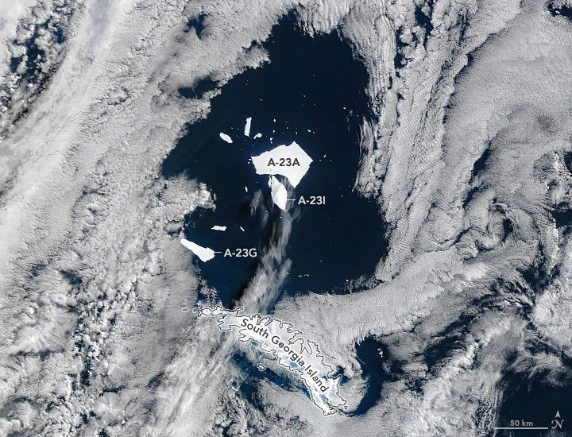

A Giant Iceberg’s Final Drift
Like every Antarctic iceberg that drifts north into the South Atlantic, Iceberg A-23A is surrendering to the ocean as spring arrives in the Southern Hemisphere. Its breakup is notable because it signals the imminent demise of a massive, long-lived berg.
This image captured on September 11, 2025 by the MODIS (Moderate Resolution Imaging Spectroradiometer) on NASA’s Terra satellite shows A-23A in disintegration. Its largest remaining fragment still spanned just over 1,500 square kilometers (580 square miles), making it the world’s second-largest freely floating iceberg at that time, though it had already lost about two-thirds of its original area during its northward journey from Antarctica.
Nearby, large fragments that calved from A-23A—specifically Iceberg A-23G and Iceberg A-23I—measured 324 square kilometers (125 square miles) and 344 square kilometers (133 square miles), respectively. The U.S. National Ice Center names, tracks, and documents Antarctic icebergs with an area of at least 20 square nautical miles (69 square kilometers) or a length of at least 10 nautical miles (19 kilometers).
Icebergs like A-23A were first identified in satellite data by Jan Lieser of Australia’s Bureau of Meteorology and Christopher Shuman of the University of Maryland (retired), and later confirmed by Britney Fajardo of the U.S. National Ice Center using MODIS imagery. Lieser noted that while large icebergs are easily monitored from space, they frequently shed thousands of smaller icebergs that can drift far from their source, sometimes entering shipping lanes.
Landsat satellites and synthetic aperture radar (SAR) systems complement MODIS observations by providing higher-resolution imagery of smaller fragments and the ability to “see” icebergs during polar night and adverse weather, though less frequently.
Before its current breakup, A-23A had a long and complex journey. After calving from the Filchner Ice Shelf in 1986, it remained grounded on the southern Weddell Sea seafloor for decades. It finally broke free in the early 2020s and drifted north. In March 2024, it became caught in a rotating ocean vortex in the Drake Passage, only to be lodged again on the shallow coastal shelf south of South Georgia Island in May 2025. After freeing itself once more, it drifted to its current location north of the island—likely its final voyage. Like many large icebergs in iceberg alley, it will eventually succumb to the relentless effects of warmer air and water.